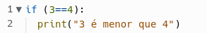
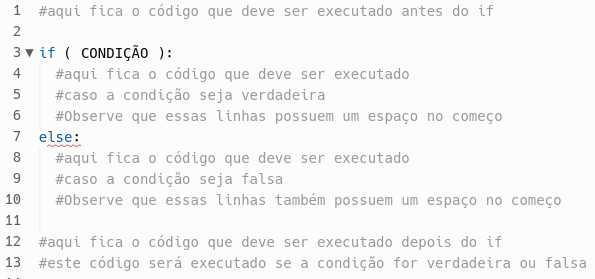

Condicionais são estruturas de programação que alteram o fluxo de execução de um algoritmo. Eles permitem que um trecho do código seja executado somente quando uma determinada condição é verdadeira.
No Python, a principal maneira de implementar um condicional é utilizando o comando if. Veja esse exemplo simples:
A figura abaixo mostra a estrutura geral de um if e as linhas de código adjacentes.
Nunca esqueça que no Python, a maneira de mostrar que um bloco de código está dentro do if ou do else é colocando espaços no início da linha. Esses espaços indicam que essa linha está dentro da estrutura anterior.
Agora, vamos fazer uns exercícios. Entre neste link e responda às perguntas: https://forms.office.com/r/WNMvSvmt2t.